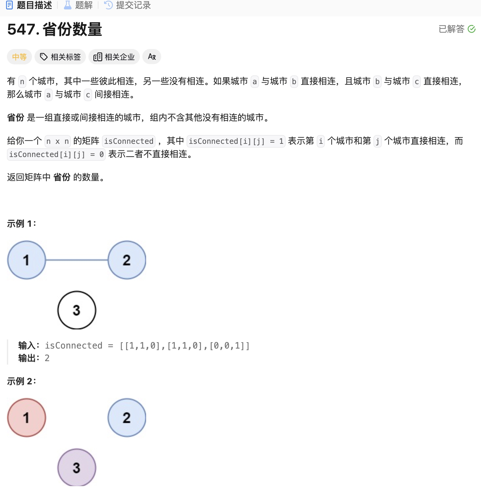
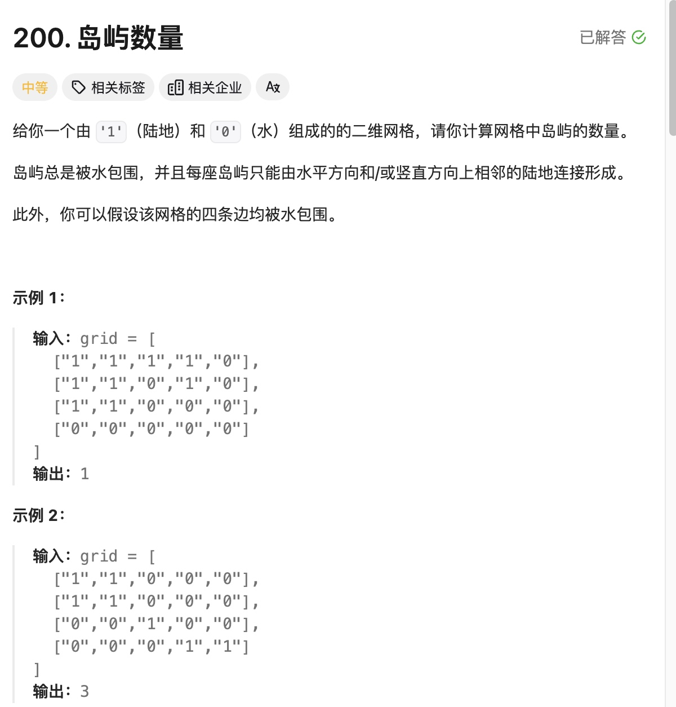
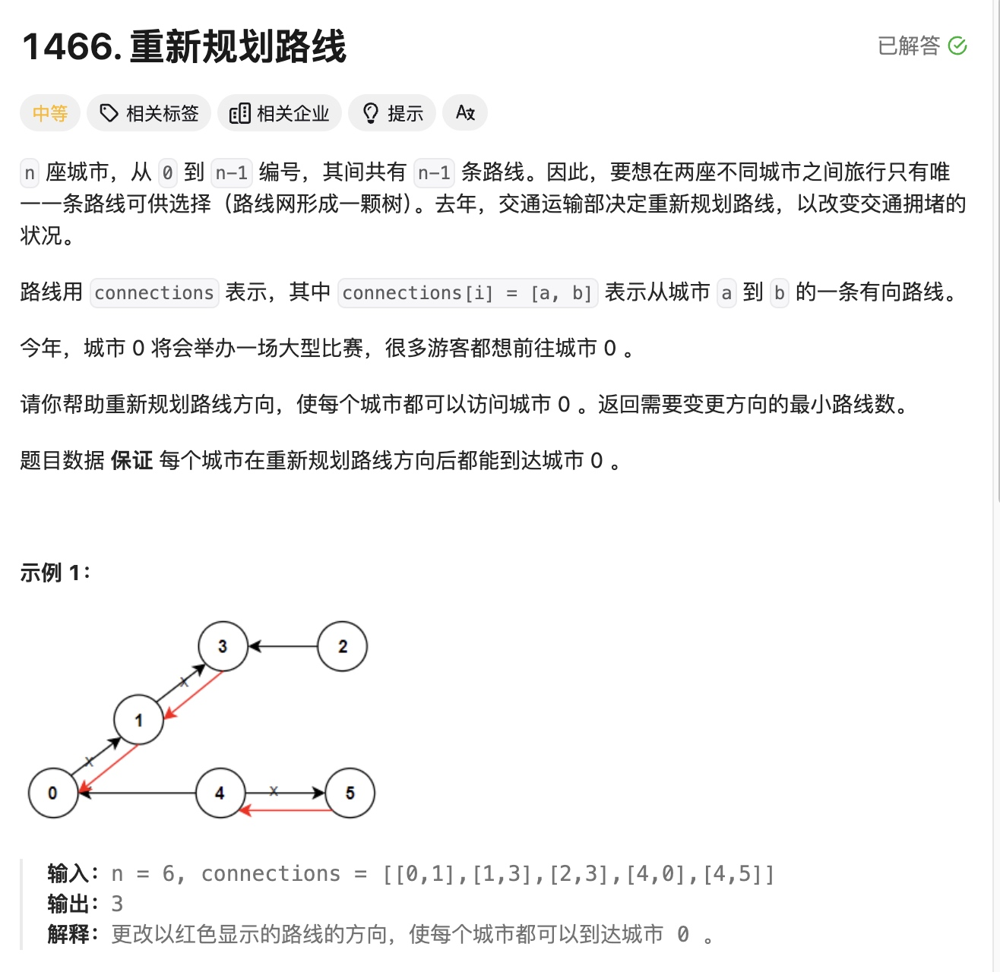
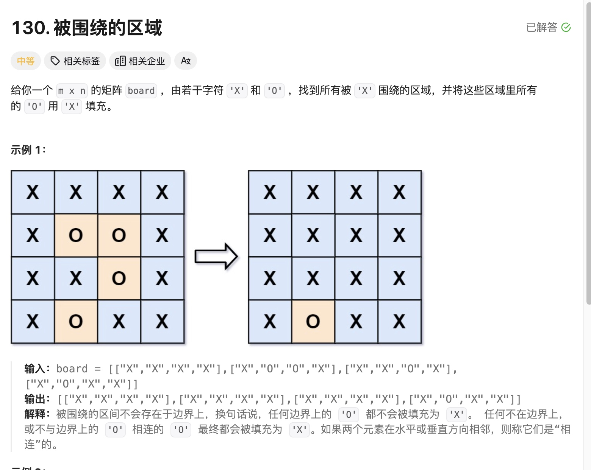

图
图其实就是一个二维数组
有深度优先和广度优先两种算法。
图的问题和二叉树不同，相当于n叉树，通常都是双层for循环，记录已经不符合规则的值，剪枝。
有些给你入口的题，比如迷宫之类的，已经有一个位置了，就需要双for了。
遍历图和二叉树的关系
其实图的遍历和二叉树很像的
- 二叉树的无论的深度递归，递归函数里有 dfs left，dfs right，但图里要有for，因为 二叉树有且只有两个节点，但图理论上可以有无数个，就需要for
- 遍历二叉树 不用
isVisited[Bool]数组，因为 二叉树不会有环。但无向图，可能会出现重复的情况，1->2, 2->1,如果不用isVisited[Bool]存是否去过，那会无限循环
其中 广度优先算法和二叉树的广度优先很类似,不是很难。
但不同的题，适合不同的算法，虽然广度比较好理解，但有些题，用广度优先，逻辑就会比较复杂。
这道题就是，它可以用两种方法来解，但广度就不是很好理解。

- 广度优先的话，就是用 很二叉树很相似，原理就是 队列，二叉树是去控制每一层的循环次数，但图是无序的，它可能会死循环，所以要有出口
一般情况就是用isVisited布尔数组，来表达是否去过，如果isVistied[x] = true就说明以前去过这个城市，或者说有其他城市和它连通，不要往队列里添加，加上后，会造成死循环。
怎么去理解这个图，很关键，第一层for循环 我们是for的每一个城市，意义是从每一个城市出发都可以到哪。把能到的都记录下来，说明他们是一个省，以后在遇到就不需要重复计算了。
class Solution1 {
func findCircleNum(_ isConnected: [[Int]]) -> Int {
let cities = isConnected.count
var isVisited = Array(repeating: false, count: cities)
var p = 0
for city in 0 ..< cities {
if isVisited[city] {
continue
} else {
var queue: [Int] = [city]
while !queue.isEmpty {
let city = queue.removeFirst()
isVisited[city] = true
for isConnect in isConnected[city].enumerated() {
if !isVisited[isConnect.offset] && isConnect.element == 1 {
queue.append(isConnect.offset)
}
}
}
p += 1
}
}
return p
}
}
- 深度优先,找到一个有连接的城市，就立刻去这个城市找和他连接的其他！城市。
最开始我的代码中有if isVisited[city] return这行，其实是有问题的，假设在上一次递归中，刚把1城市isVisited[nextCity] = true,紧接着做递归，判断生效，就return了，阻碍了沿着当前城市继续遍历的思路。我们是需要在调用 DFS函数之前判断就可以了。
func findCircleNum(_ isConnected: [[Int]]) -> Int {
let length = isConnected.count
var isVisited = Array(repeating: false, count: isConnected.count)
var p = 0
func dfs(city: Int) {
//if isVisited[city] {
// return
//}
for nextCity in 0 ..< length {
if isConnected[city][nextCity] == 1 && !isVisited[nextCity] {
isVisited[nextCity] = true
dfs(city: nextCity)
}
}
}
for city in 0 ..< length {
if !isVisited[city] {
dfs(city: city)
print(isVisited)
p += 1
}
}
return p
}

岛屿问题和城市问题有一个不同点，就是城市问题，我们是明确知道要去哪个城市的，因为图的含义告诉了我们城市和哪些城市相连。但岛屿不知道，这个图的含义是岛屿的位置，所以我们就要向四周扩撒。
class Solution {
var grid: [[Character]]!
func numIslands(_ grid: [[Character]]) -> Int {
let rlength = grid.count
let clength = grid[0].count
self.grid = grid
var count = 0
for r in 0 ..< rlength {
for c in 0 ..< clength {
if self.grid[r][c] == "1" {
dfs(curR: r, curC: c)
count += 1
}
}
}
return count
}
func dfs(curR: Int, curC: Int) {
if !inArea(r: curR, c: curC) {
return
}
if grid[curR][curC] != "1" {
return
}
grid[curR][curC] = "2"
dfs(curR: curR - 1, curC: curC)
dfs(curR: curR + 1, curC: curC)
dfs(curR: curR, curC: curC + 1)
dfs(curR: curR, curC: curC - 1)
}
func inArea(r: Int, c: Int) -> Bool {
return r >= 0 && r < grid.count && c >= 0 && c < grid[0].count
}
}
广度优先也能做
这种解法和1926 迷宫的题很像，但迷宫不需要双层循环，从入口开始一直向外延伸就好，如果队列空了，就说明没有出口。有了一个入口，就能联想到广度优先，向外扩散。其实没有入口就暴力入口就行了，把每一个都当成入口，循环过的就不循环了。
class Solution {
var grid: [[Character]]!
func numIslands(_ grid: [[Character]]) -> Int {
let rlength = grid.count
let clength = grid[0].count
self.grid = grid
var count = 0
for r in 0 ..< rlength {
for c in 0 ..< clength {
if self.grid[r][c] == "1" {
bfs(r: r, c: c)
count += 1
}
}
}
return count
}
func bfs(r: Int, c: Int) {
var queue: [(r: Int, c: Int)] = []
queue.append((r: r, c: c))
grid[r][c] = "2"
let rArray = [-1, 1, 0, 0]
let cArray = [0, 0, -1, 1]
while !queue.isEmpty {
let location = queue.removeFirst()
for index in 0 ..< 4 {
let r = rArray[index] + location.r
let c = cArray[index] + location.c
if inArea(r: r, c: c) && grid[r][c] == "1" {
queue.append((r, c))
grid[r][c] = "2"
}
}
}
}
func inArea(r: Int, c: Int) -> Bool {
return r >= 0 && r < grid.count && c >= 0 && c < grid[0].count
}
}

这道题中，map是有错误数据的，如何保证不出错，我还没有想明白
变成双向的，所以就不用for所有节点了，因为根据题意，一定可以走完全部节点。
class Solution {
func minReorder(_ n: Int, _ connections: [[Int]]) -> Int {
var graph = [Int: [(to: Int, reverse: Bool)]]()
for connection in connections {
let (from, to) = (connection[0], connection[1])
graph[from, default: []].append((to, true)) // true 表示需要反转
graph[to, default: []].append((from, false)) // false 表示无需反转
}
var visited = Array(repeating: false, count: n)
var result = 0
func dfs(_ node: Int) {
visited[node] = true
for edge in graph[node, default: []] {
if !visited[edge.to] {
if edge.reverse {
result += 1 // 如果是反向边，计数加一
}
dfs(edge.to)
}
}
}
// 从节点0开始DFS
dfs(0)
return result
}
}
class Solution {
func solve(_ board: inout [[Character]]) {
var rLength = board.count
var cLength = board[0].count
var isVisited: [[Bool]] = Array(repeating: Array(repeating: false, count: cLength), count: rLength)
for r in 0 ..< rLength {
for c in 0 ..< cLength {
if board[r][c] == "O" && !isVisited[r][c] {
bfs(&board, r: r, c: c, isVisited: &isVisited)
}
}
}
}
//先正常遍历 记录队列的位置， 如果 遇到边界 那就不改了，如果没遇到边界，就把queue里所有的都改成x
func bfs(_ board: inout [[Character]],
r: Int,
c: Int,
isVisited: inout [[Bool]]) {
var queue: [(r: Int, c: Int)] = [(r,c)]
isVisited[r][c] = true
let nextLocate: [(r: Int, c: Int)] = [(1,0), (-1,0),(0,1),(0,-1)]
var tempRecord: [(r: Int, c: Int)] = []
var isSiderRecord: Bool = false
while !queue.isEmpty {
let locate = queue.removeFirst()
tempRecord.append(locate)
if isSider(r: locate.r, c: locate.c, board: board) {
isSiderRecord = true
}
for item in nextLocate {
let nextLocateR = locate.r + item.r
let nextLocateC = locate.c + item.c
if inArea(r: nextLocateR, c: nextLocateC, board: board) && board[nextLocateR][nextLocateC] == "O" && !isVisited[nextLocateR][nextLocateC] {
queue.append((nextLocateR, nextLocateC))
isVisited[nextLocateR][nextLocateC] = true
}
}
}
if !isSiderRecord {
tempRecord.forEach { locate in
board[locate.r][locate.c] = "X"
}
}
}
func inArea(r: Int, c: Int, board: [[Character]]) -> Bool {
return r >= 0 && r < board.count && c >= 0 && c < board[0].count
}
func isSider(r: Int, c: Int, board: [[Character]]) -> Bool {
r == 0 || c == 0 || r == board.count - 1 || c == board[0].count - 1
}
}
bfd 在不同的地方 修改 isVisited数组的区别

最初的想法是：先正常遍历 tempArr记录可能要改的位置， 如果 遇到边界就用bool记录，最后根据是否有边界，来判断，如果没有边界，就把tempArr里所有的都改成x
更好的做法是，直接只遍历四周，将四周的变成 “A”,然后在全部遍历一遍，是O的就是改成X，是A的改成O
class Solution {
func solve(_ board: inout [[Character]]) {
var rLength = board.count
var cLength = board[0].count
//也有会重复的。之前考虑存在数组里，在遍历，但是也会有重复的数据
// var siderArr: [(r: Int, c: Int)] = []
for index in 0 ..< rLength {
if board[index][0] == "O" {
dfs(&board, r: index, c: 0)
}
if board[index][cLength - 1] == "O" {
dfs(&board, r: index, c: cLength - 1)
}
}
for index in 0 ..< cLength {
if board[0][index] == "O" {
dfs(&board, r: 0, c: index)
}
if board[rLength - 1][index] == "O" {
dfs(&board, r: rLength - 1, c: index)
}
}
// for item in siderArr {
// dfs(&board, r: item.r, c: item.c)
// }
for r in 0 ..< rLength {
for c in 0 ..< cLength {
if board[r][c] == "A" {
board[r][c] = "O"
} else if board[r][c] == "O" {
board[r][c] = "X"
}
}
}
}
func dfs(_ board: inout [[Character]],
r: Int,
c: Int){
if !inArea(r: r, c: c, board: board) {
return
}
if board[r][c] != "O"{
return
}
board[r][c] = "A"
dfs(&board, r: r + 1, c: c)
dfs(&board, r: r - 1, c: c)
dfs(&board, r: r, c: c + 1)
dfs(&board, r: r, c: c - 1)
}
func inArea(r: Int, c: Int, board: [[Character]]) -> Bool {
return r >= 0 && r < board.count && c >= 0 && c < board[0].count
}
}
下面两个代码块，除了 修改isVisited数组位置不同，其他没有区别，但性能在一些情况比差别会很大，比如
["O","O"]
["O","O"]
- 当遍历完(0,0),此时队列中[(1,0),(0,1)],此时下一步，(1,0)的时候，会将（1，1）添加到队列，然后下一步，(0,1)的时候，（1，1）又被添加到队列中。早成了重复的数据遍历
- 只要添加到队列，对应的isVisited就 修改，保持同步，不会有重复数据
func bfs(_ board: inout [[Character]],
r: Int,
c: Int,
isVisited: inout [[Bool]]) {
var queue: [(r: Int, c: Int)] = [(r,c)]
let nextLocate: [(r: Int, c: Int)] = [(1,0), (-1,0),(0,1),(0,-1)]
while !queue.isEmpty {
let locate = queue.removeFirst()
isVisited[locate.r][locate.c] = true
print("写入了", count)
count += 1
for item in nextLocate {
let nextLocateR = locate.r + item.r
let nextLocateC = locate.c + item.c
if board[nextLocateR][nextLocateC] == "O" && !isVisited[nextLocateR][nextLocateC] {
queue.append((nextLocateR, nextLocateC))
}
}
}
}
func bfs(_ board: inout [[Character]],
r: Int,
c: Int,
isVisited: inout [[Bool]]) {
var queue: [(r: Int, c: Int)] = [(r,c)]
isVisited[r][c] = true
print("xieru", count)
count += 1
let nextLocate: [(r: Int, c: Int)] = [(1,0), (-1,0),(0,1),(0,-1)]
while !queue.isEmpty {
let locate = queue.removeFirst()
for item in nextLocate {
let nextLocateR = locate.r + item.r
let nextLocateC = locate.c + item.c
if board[nextLocateR][nextLocateC] == "O" && !isVisited[nextLocateR][nextLocateC] {
queue.append((nextLocateR, nextLocateC))
isVisited[nextLocateR][nextLocateC] = true
print("d写入了", count)
count += 1
}
}
}
}